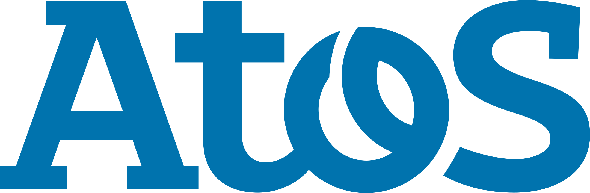

<mat-toolbar *ngIf="mostrarNav" class="header mat-elevation-z4">
  <span>
    <a>
      
    </a>
  </span>
  <div class="icon">
    <span class="title-group">
      <a routerLink="/dashboard">
        <i class="material-icons"> dashboard </i>
        Início
      </a>
      <a class="bag" routerLink="/produtos">
        <mat-icon> list_alt</mat-icon>
        Produtos
      </a>
      <a routerLink="/clientes">
        <mat-icon>face</mat-icon>
        Clientes
      </a>
    </span>
  </div>
  <div class="configuracao">
    <div class="icon">
      <a routerLink="/configuracao">
        <mat-icon>settings</mat-icon>
      </a>
    </div>
    <div class="icon">
      <a routerLink="/logout">
        <mat-icon>exit_to_app</mat-icon>
      </a>
    </div>
  </div>
</mat-toolbar>
